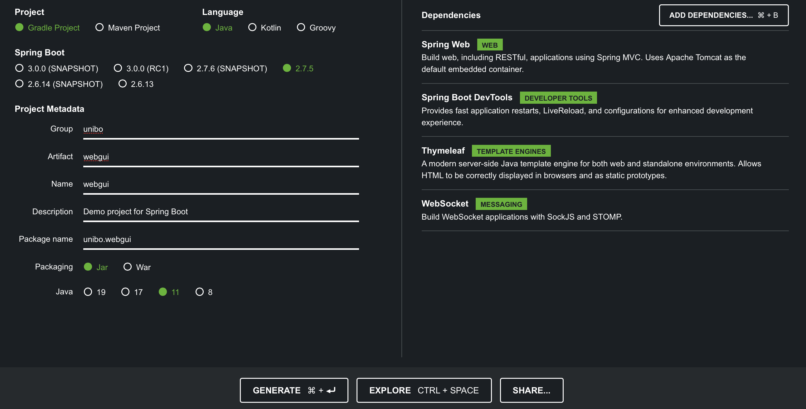
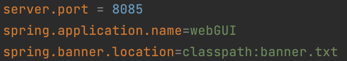

Introduction
Progetto finale di ISS finalizzato allo sviluppo software di un impianto di smistamento dei rifiuti attraverso un robot che preleva il carico del camion e lo porta al container appropriato
Requirements
Work Plan
In questo Sprint ci occuperemo dell'analisi e dello sviluppo della WasteServiceStatusGUI .
In particolare tratteremo le problematiche relative a:
In particolare tratteremo le problematiche relative a:
-
Type of the GUI
- Web App
- Mobile App
-
Data
- Comprendere quale sia la fonte dei dati di interresse per la GUI
- Comprendere come questi dati possano arrivare alla GUI
-
Late start of the GUI
- Come deve comportarsi il sistema nel caso in cui la GUI venga avviata dopo il
WasteService
- Come deve comportarsi il sistema nel caso in cui la GUI venga avviata dopo il
Checkpoint Sprint1
Sprint1 result
L'analisi condotta nello Sprint1 e la successiva fase di progetto e sviluppo, hanno dato vita ad un sistema che presenta la seguente architettura logica:
L'obbiettivo di questo Sprint, è quello di zoomare sul componente
Problem analysis
Problem: Kind of GUI
- App Android
- Web App
- App iOS
Per quanto riguarda la Web App invece, è possibile utilizzare un browser web da qualsiasi dispositivo per accedere alla GUI, risultando quindi più versatile.
Dopo aver analizzato le varie opzioni, suggeriamo al team di sviluppo, la strada della Web App, servendosi del framework
Problem: Show Data
Data Source
Bisogna quindi comprendere quali siano le fonti di tali informazioni. In particolare, la GUI deve fornire informazioni su:-
Stato del
transportTrolley e la sua posizione nella stanza - Peso corrente dei due container
- Stato corrente del Led
Stato e posizione del transportTrolley
Dall'analisi dei requisiti è emerso che lo stato e la posizione delenum class CurrStateTrolley { IDLE, STOPPED, MOVING, PICKINGUP, DROPPINGOUT }
Inoltre, in seguito all'analisi condotta nello Sprint1, è stato deciso di mantenere questi dati utilizzando laenum class TTPosition { HOME, INDOOR, PLASTICBOX, GLASSBOX, ONTHEROAD }
Peso corrente dei due container
Dall'analisi dei requisiti è emerso che il peso corrente dei due container, può essere rappresentato tramite unaInoltre, come emerso dallo Sprint1, lo stato dei container è mantenuto nellaprivate val boxCurrentWeight : MutableMap < Material, Double >
Stato del Led
Per quanto rigurda lo stato del led, dall'analisi dei requisiti è emerso che può essere rappresentato tramite un enumerativo:Tuttavia, la sua gestione, resta una problematica ancora aperta che verrà trattata nello Sprint3. Ciò nonostante, supponiamo che lo stato del led sarà gestito allo stesso modo degli altri dati, ossia tramite il SystemStateManager. Per tale motivo, suggeriamo agli sviluppatori di apportare le modifiche necessarie, al SystemStateManager e alla data class SystemState.kt, affinchè essi siano predisposti alla gestione dello stato del led.enum class CurrStateLed { ON, OFF, BLINKING }
Alla luce di questa analisi è possibile affermare che la fonte di dati per la GUI, è rapresentata dal componente SystemStateManager.
Polling vs Push
Una volta compreso che ilSono possibili due modalità di recupero dei dati:
Polling
Questa soluzione prevede che sia la GUI a richiedere i dati alInoltre, affinchè non venga perso nessun dato, è necessario che questa operazione venga ripetuta ad intervalli regolari, generando un elevato overhead di rete.
Per tale motivo, sconsigliamo agli sviluppatori di adottare questo approccio.
Push
Tale soluzione prevede che laL'adozione di questa soluzione è particolarmente consigliata, in quanto permette di sfruttare la caratteristica degli attori QAk di essere realizzati come delle risorse CoAP osservabili. Procedendo in questo modo, sarà sufficente che la GUI apra una conessione CoAP con il server CoAP del
Problem: Late start of the GUI
Bisogna comprendere come, in tale circostanza, debba essere gestito l'aggiornamento dei dati mostrati dalla GUI. Infatti se la GUI dovesse essere avviata tempo dopo il WasteService, potrebbero essersi verificati dei cambiamti di stato che la GUI non mostra.
Si pone il problema di come gestire l'aggiornamento dei dati mostrati dalla GUI in caso di late start.
- Fare fetch all'avvio della GUI
- Aspettare che una richiesta scateni un
updateResource
Waiting for updateResources
Aspettare che arriva un'altra richiesta al WasteService è la soluzione più semplice da implementare, ma non è la migliore.Infatti protrebbe verificarsi il caso in cui al WasteService non arrivino richieste anche per istanti di tempo lunghi, pertanto la GUI non si aggiornerà fino a quel momento, mostrando dei dati errati.
Fetch
Per fare ciò, si potrebbe inviare alBisogna capire che tipo di messaggio inviare, un
Alla luce di ciò, consigliamo agli sviluppatori di progettare la GUI in modo che faccia Fetch dei dati all'avvio.Dispatch getdata : getdata(_)
Architettura Logica
Sulla base di quanto emerso in fase di analisi del problema è possibile ridefinire l'architettura logica del sistema.
Test Plan
Per testare il corretto funzionamento del sistema è sufficente verificare che la WasteServiceStatusGUI riceva i dati corretti sulla connessione CoAP.
Per questo motivo sarà sufficiente istanziare la seguente classe di test :
Test SystemStateManager: creare un osservatore CoAP del SystemStateManager e verificare che somministrando un messaggiostorewaste al sistema, l'osservatore riceva gli aggioramenti di stato corretti.
Per questo motivo sarà sufficiente istanziare la seguente classe di test :
Test SystemStateManager: creare un osservatore CoAP del SystemStateManager e verificare che somministrando un messaggio
Project
SystemStateManager
Come suggerito dagli analisti, abbiamo deciso di estendere le funzionalita delInoltre, è stato necessario modificare anche laDispatch updateled : updateled(STATE)
Inoltre, per risolvere la problematica "Late start of the GUI" abbiamo predisposto il SystemStateManager all'ascolto di un messaggio del tipo:enum class CurrStateLed { ON, OFF, BLINKING }data class SystemState (private var currLedState : CurrStateLed = CurrStateLed.OFF ... ){ ...fun setCurrLedState(ledState : CurrStateLed)fun getCurrLedState() : CurrStateLed }
Alla ricezione di questo messaggio il SystemStateManager esegue unDispatch getdata : getdata(_)
Questo meccanismo verrà sfruttato dalla GUI per eseguire il
Infine, per predisporre il sistema a possibili sviluppi futuri e rendere il codice riutilizzabile, è stato deciso di dotare il SystemStateManager della capacità di riceve richieste circa lo stato del sistema e di inviare risposte. Per fare ciò sono stati introdotti i seguenti messaggi:
Ai seguenti link è possibile consultare il codice del SystemStateManager e della SystemState:Request getledstate : getledstate(_)Request gettrolleyposition : gettrolleyposition(_)Request gettrolleystate : gettrolleystate(_)Request getcontainerstate : getcontainerstate(_)Reply givedata : givedata(DATA)
SystemStateManager.qak
SystemState.kt
GUI
Operazioni Preliminari
Come suggerito dagli analisti, abbiamo deciso di progettare laPer iniziare è bastato collegarsi al sito Spring.io, il quale ci ha permesso di creare il progetto, scegliendone innanzitutto il tipo (Gradle o Maven), la versione Java da utilizzare e le dipendenze necessarie da "aggiungere" al progetto come mostrato in figura. Premuto il tasto

Dopo aver scaricato il file .zip è stato necessario decomprimerlo ed importarlo nel nostro IDE come progetto
Dopo di che abbiamo aggiunto al file

Il file build.gradle dell'applicazione è consultabile al seguente link build.gradle.
Il passo successivo è stato quello di definire all'interno del file

Realizzazione dell'applicazione
Parte sviluppata in Java
Quando è stato creato il progetto, in maniera del tutto automatica è stata generata la classe
La classe@SpringBootApplication public class Application {public static void main(String[] args) { SpringApplication.run(WebguiApplication.class, args); } }
In generale, l'applicazione funziona anche senza aver definito un Controller, poichè al momento dell'avvio della classe
Poichè nel nostro caso faremo utilizzo di un Controller, il cui codice verrà descritto più avanti, abbiamo creato all'interno della cartella
All'interno dello stesso software vi è anche una classe di supporto in cui è possibile trovare il codice per creare una connessione CoAP e una connessione TCP.public interface IWsHandler {void sendToAll (String message); }
In questo modo si ottiente un oggetto di tipopublic class UtilsGUI {private static Interaction2021 conn;private static Interaction2021 connTcp;public static CoapConnection connectWithUtilsUsingCoap(String addr)() {String ctx = "ctxwasteservice";String qak = "systemstatemanager";String path = ctx+"/"+qak;conn = new CoapConnection(addr, path);return conn; } }
Tale metodo, invece, viene utilizzato in particolar modo per risolvere un problema posto in fase di analisi. Infatti nel caso in cui la GUI si collega dopo tanto tempo, si ha il bisogno comunque di mostrare lo stato attuale del sistema. Per questo tramite la connessione TCP viene inviato unpublic static void connectWithUtilsUsingTcp(String addr)() {String x[] = addr.trim().split(":");connTCP = TcpClientSupport.connect(x[0], Integer.parseInt(x[1]), 10); }
public void sendMsg(){String msg = "msg(getdata, dispatch, webgui, systemstatemanager, getdata(_), 1)";connTCP .forward(msg); }
Affinchè l'applicazione Spring inoltri le richieste di un client al server, è necessario registrare un gestore utilizzando una classe di configurazione che implementa l'interfaccia
L'annotazione@Configuration @EnableWebSocket public class WebSocketConfigurationimplements WebSocketConfigurer {public static final WebSocketHandler wshandler =new WebSocketHandler();@Override public void registerWebSocketHandlers(WebSocketHandlerRegistry registry) { registry.addHandler(wshandler, "/ws").setAllowedOrigins("*"); } }
Nel nostro caso ci avvaliamo della classe
Il codice della classepublic class WebSocketHandlerextends AbstractWebSocketHandlerimplements IWsHandler {private final List<WebSocketSession > sessions =new CopyOnWriteArrayList <>();@Override protected void handleTextMessage(WebSocketSession session, TextMessage message)throws Exception { sendToAll(message); }@Override public void afterConnectionEstablished(WebSocketSession session)throws Exception { sessions.add(session); }@Override public void afterConnectionClosed(WebSocketSession session, CloseStatus status)throws Exception { sessions.remove(session); } }
La classe
Il codice della classepublic class UtilsCoapObserverimplements CoapHandler {@Override public void onLoad(CoapResponse response){}WebSocketConfiguration .wshandler.sendToAll(""+response.getResponseText()); } }
Precedentemente abbiamo detto che nel progetto è stato fatto uso di un Controller, il quale è definito nella classe
Attraverso l'annotazione
Quando ci colleghiamo all'indirizzo@Value("${webgui.addr}") String addr;@Value("$container.glassmax") String glassmax; ...
@GetMapping public String entry(Model viewmodel) {return buildThePage(viewmodel); }
public String buildThePage(Model viewmodel) { setConfigParams(viewmodel);return "webGUI"; }
Quando all'interno della paginapublic void setConfigParams(Model viewmodel) { viewmodel.addAttribute("addr", addr); viewmodel.addAttribute("glassmax", glassmax); ... }
Tale metodo restituisce la pagina@PostMapping public String update(Model viewmodel,@RequestParam String ipaddr) { addr = ipaddr; viewmodel.addAttribute("addr", addr);UtilsGUI .connectWithUtilsUsingTcp(ipaddr);UtilsGUI .connectWithUtilsUsingCoap(ipaddr).observeResource(new UtilsCoapObserver());UtilsGUI .sendMsg();return buildTheUpdatePage(viewmodel); }
Il codice della classe
Parte sviluppata in javascript
All'interno del fileIn questo modo ogni volta che il SystemStateManager invia un messaggio di stato, la pagina web viene aggiornata con i nuovi valori, mostrando il peso attuale dei container, lo stato e la posizione del transportTrolley.function connect(){ ...socket =new WebSocket(addr);socket .onmessage =function (event){ msg =event .data;let container =JSON .parse(msg);let gMax = container['boxMaxWeight']['GLASS'];let pMax = container['boxMaxWeight']['PLASTIC']; ... setMessageToWindow(glassmax, gMax.toString()); setMessageToWindow(plasticmax, pMax.toString()); ... } }
Per mostrare la mappa della stanza è stato sviluppato un ulteriore file javascript
Ogni qual volta si ha un cambiamento di stato, in particolar modo quando la posizione del transportTrolley cambia, la mappa della stanza viene aggiornata indicando con un colore diverso la cella corrispondente in cui si trova.$. ajax ({dataType : "json",url : "./WasteServiceSystemConfig.json",data : null,async : false,success : function(data) {$ .each (data, function (k, v) { dataFromJson[k] = v }) } });
In questo Sprint, inoltre, ci siamo occupati di predisporre la GUI per la visualizzazione delle notifiche da parte del Led. Dai requisiti forniti dal commitente risulta chiaro che il Led deve essere spento quando il transportTrolley si trova nella posizione di HOME e nello stato di IDLE. Deve essere acceso quando lo stato del trolley è STOPPED, PICKINGUP o DROPPINGOUT e deve lampeggiare quando lo stato è MOVING e la posizione è ONTHEROAD. Per fare ciò abbiamo inserito all'interno del file
Ai seguenti link è possibile consultare il codice javascript sviluppato per la pagina weblet flag = 1if (position.toString() == "HOME" && trolley.toString() == "IDLE"){led2 .classList .add("d-none")led1 .classList .remove("d-none")circle .style .background = "grey" }if (trolley.toString() == "STOPPED" || trolley.toString() == "PICKINGUP" || trolley.toString() == "DROPPINGOUT"){led2 .classList .add("d-none")led1 .classList .remove("d-none")circle .style .background = "green" }if (trolley.toString() == "MOVING" && position.toString() == "ONTHEROAD"){led1 .classList .add("d-none")led2 .classList .remove("d-none")setInterval (function () { //funzione che permette di far lampeggiare il ledif ((flag%2)==0){circle .style .background = "green" }else {circle .style .background = "grey" }flag ++ },300) }
ioutils.js.
wsminimal.js.
generate.js.
Il codice del file
Testing
Per verificare il corretto funzionamento del sistema, è stata instanziata la classe di test: TestSystemStateManager.kt.
Dal momento che la WasteServiceStatusGUI è progettata come un componente passivo che riceve dati su una connessione CoAP , per verificare il corretto funzionamento
del sistema sarà sufficente verificare che la WasteServiceStatusGUI riceva i giusti aggiornamenti di stato da parte dello SystemStateManager .
A tale scopo, il test plan prevede di inviare una serie di richieste di deposito alWasteService e di verificare che il SystemStateManager invii sulla connessione CoAP
gli aggiornamenti di stato corretti.
A tale scopo, il test plan prevede di inviare una serie di richieste di deposito al
fun testLoadAcceptUpdate(){var storeWaste ="msg(storewaste, request, testunit, wasteservice, storewaste(GLASS, 50),1)" conn.request(storeWaste)var newState = obs.getNext() assertTrue(...) assertTrue(...) }
Checkpoint Sprint2
A seguito dell'analisi del problema e delle successive fasi di progetto e sviluppo l'architettura logica è stata così ridefinita:

How to start the system
-
Avviare il
VirtualRobot
Da terminale navigare fino al path WasteService-Project/WEnv/it.unibo.virtualRobot2020/node/WEnv/server/src, lanciare il comando node WebpageServer.js, aprire un browser e collegarsi al seguente indirizzo: http://localhost:8090cd WasteService-Project/WEnv/it.unibo.virtualRobot2020/node/WEnv/server/src node WebpageServer.js
-
Avviare il
basicrobot22
Da terminale navigare fino al path WasteService-Project/Sprint1/unibo.basicrobot22 e lanciare il comando ./gradlew runcd WasteService-Project/Sprint1/unibo.basicrobot22 ./gradlew run
-
Avviare il
wasteService
Da terminale navigare fino al path WasteService-Project/Sprint2/unibo.wasteService e lanciare il comando ./gradlew runcd WasteService-Project/Sprint2/unibo.wasteService ./gradlew run
-
Avviare lo
smartdevice
Da terminale navigare fino al path WasteService-Project/Sprint1/unibo.smartdevice e lanciare il comando python3 smartdevice.pycd WasteService-Project/Sprint1/unibo.smartdevice python3 smartdevice.py
-
Avviare la
WasteServiceStatusGUI
Da terminale navigare fino al path WasteService-Project/Sprint2/webgui e lanciare il comando ./gradlew runcd WasteService-Project/Sprint2/webgui ./gradlew run
Aprire il browser e digitare l'indirizzo http://localhost:8085
By students:
Name: Annamaria Simonitto, Enrico Valastro, Alessio Reitano
Email: annamaria.simonitto@studio.unibo.it, enrico.valastro@studio.unibo.it, alessio.reitano@studio.unibo.it